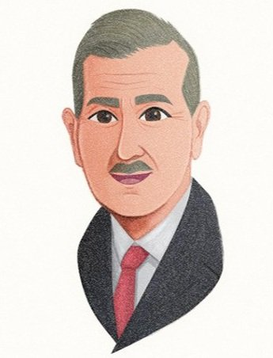

George Lewis Shaw(🇬🇧):
[1880. 1. 25 ~ 1943. 11.13]
Achievements공적
Provided Critical Support to the Korean Independence Movement:한국 독립운동에 대한 결정적 지원:
- Assisted the Korean Provisional Government by transporting weapons, delivering government funds, and facilitating communication between activists.무기 운반과 정부 자금 전달, 운동가들 사이의 연락을 도우며 대한민국 임시정부를 지원하였습니다.
- Played a vital role in the independence campaign by allowing the Korean Provisional Government's Andong Transportation Branch Office to operate within the same building as his company, Yilyungyanghaeng.자신의 회사 이륭양행과 같은 건물에서 대한민국 임시정부 교통국 안동지부 사무소가 운영될 수 있도록 하여 독립운동에 중요한 역할을 하였습니다.
- His company served as a connection point between the provisional government's offices in China and Korea, and acted as a military base to prepare for combat.그의 회사는 중국과 국내에 있던 임시정부 기관을 잇는 연락 거점이었으며, 전투를 준비하는 군사 기지 역할도 하였습니다.
Defied Japanese Authorities:일제에 대한 항거:
- Despite intense Japanese surveillance and arrest, continued to aid Korean independence fighters.일제의 극심한 감시와 체포에도 한국 독립운동가들에 대한 지원을 계속하였습니다.
- Exercised extraterritorial rights to resist Japanese colonial pressure, becoming a thorn in the side of Japanese officials.치외법권을 행사하여 일제의 식민 통치 압력에 맞섰으며, 일본 관헌에게 눈엣가시 같은 존재가 되었습니다.
- Was incarcerated in Seodaemun Prison for four months but continued his support for the Korean independence movement even after his release.서대문형무소에 4개월간 수감되었으나, 출감한 뒤에도 한국 독립운동에 대한 지원을 이어갔습니다.
Recognized by Korean Independence Leaders:한국 독립운동 지도자들의 인정:
- Received the Golden Medal for Merit from Ahn Chang-ho and Rhee Syngman in 1921 for his contributions to the independence movement.1921년 독립운동에 기여한 공로로 안창호와 이승만으로부터 공로 금메달을 받았습니다.
- Resumed operations at the Andong office after his arrest, allowing Korean activists to continue their work in secrecy.체포된 뒤에도 안동 사무소의 운영을 재개하여 한국 독립운동가들이 비밀리에 활동을 계속할 수 있도록 하였습니다.
Sustained His Support Despite Personal and Financial Hardships:개인적·재정적 곤경에도 지속된 지원:
- Despite financial difficulties and Japanese crackdowns, Shaw continued his support for Korean independence until he was forced to close his company.재정난과 일제의 탄압에도 쇼는 회사를 문 닫아야 할 때까지 한국 독립운동에 대한 지원을 계속하였습니다.
- His dedication to the cause endured until his death in 1943, after 31 years of support for the Korean independence movement.한국 독립운동을 31년간 지원한 끝에 1943년 세상을 떠날 때까지 그 헌신을 이어갔습니다.
Posthumous Recognition:추서:
- On March 1, 1963, the Korean government posthumously awarded Shaw the Order of Merit for National Foundation.1963년 3월 1일 대한민국 정부는 쇼에게 건국훈장을 추서하였습니다.
- His granddaughter, Marjorie Hutchings, accepted the award on his behalf in 2012, honoring his legacy and contributions to Korea’s independence.2012년 손녀 마조리 허칭스가 그를 대신하여 훈장을 받으며, 한국 독립에 남긴 그의 공적과 유산을 기렸습니다.
Verdicts판결
- In 1907, Bethell was tried by the British consul-general in Seoul for breaching public order through ten articles published in his newspapers. He was sentenced to six months of probation.1907년 베델은 자신의 신문에 실린 10편의 기사가 공안을 해쳤다는 이유로 서울 주재 영국 총영사에게 재판을 받아 6개월의 근신형을 선고받았습니다.
- In 1908, Japanese authorities continued to pressure for his expulsion from Korea, leading to a second trial involving Korea, Japan, and the U.K. Bethell was sentenced to three weeks in jail, six months of probation, and fined GBP 350. He served three weeks in a Shanghai jail before being released on July 11, 1908.1908년 일제가 그의 한국 추방을 계속 압박하면서 한국·일본·영국이 관여한 두 번째 재판이 열렸습니다. 베델은 금고 3주와 근신 6개월, 벌금 350파운드를 선고받았으며, 상하이 감옥에서 3주를 복역한 뒤 1908년 7월 11일 석방되었습니다.
- Japanese media falsely accused Bethell of embezzling public funds collected by Koreans, but Bethell took the case to the British Supreme Court in Shanghai and won in December 1908.일본 언론이 베델을 한국인들이 모은 공금을 횡령하였다고 허위로 비난하였으나, 베델은 이 사건을 상하이 주재 영국 고등법원에 제기하여 1908년 12월 승소하였습니다.